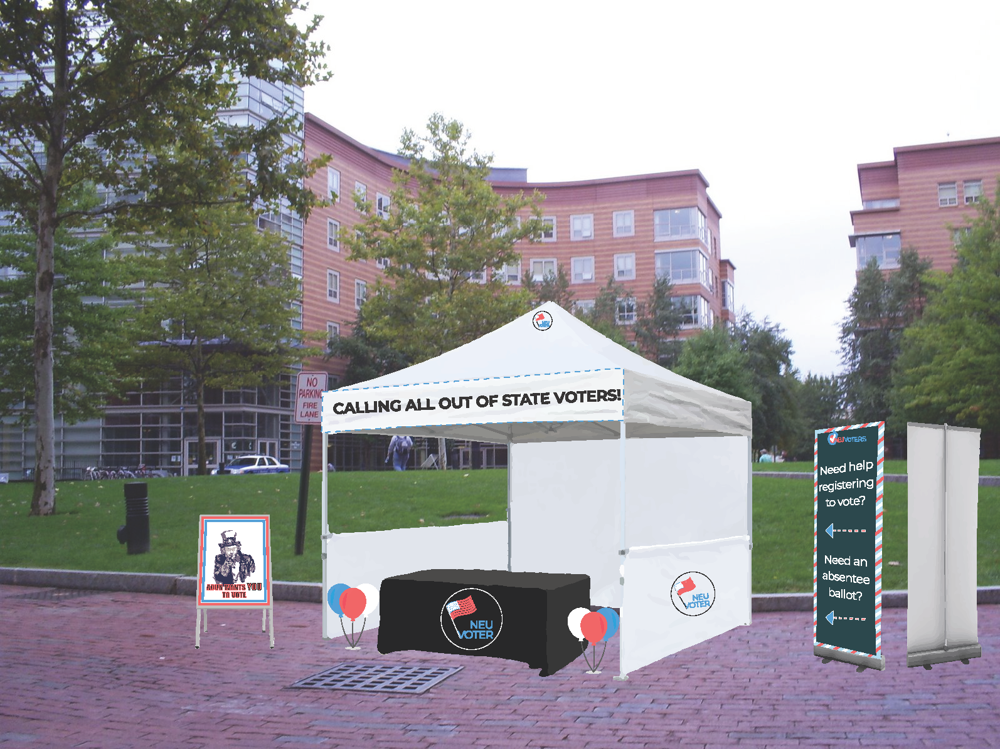

NEU Voters
Overview
A collaborative project, NEU Voters was an intervention designed to address the issue of low young-voter turnout in the U.S. My groupmates and I designed a campaign meant to redress the pain points of registering to vote, as well as voting out of state. Our hopes were to not only make this process more accessible for students at Northeastern, but to make this campaign replicable on any college campus.
Our intent was to set up the booths about a month prior to an election, whether local, state, or national. For those hoping to vote out of state, the booth's moderators would help them learn about their state's processes and deadlines.
Definition and Ideation
My groupmates and I first started with the issue of voter turnout. After a couple brainstorming sessions, we narrowed our focus and produced this problem statement: there is low voter turnout among young people (ages 18-24) in the United States in local and state elections, as many students attend out-of-state universities and are unaware of the absentee ballot process.
We then ideated on what our intervention would look like, for example, a website curated for out-of-state college students that compiled helpful information. However, as we collected survey information and conducted interviews, we saw that a major pain point was not only a lack of awareness about absentee voting, but also simply forgetting about deadlines along with the inconvenience of mailing in a ballot while on a college campus.
For example, some states don't allow online voter registration, so one has to print then mail in their registration form. Then, most states require voters to mail in a request form for an absentee ballot, before having to mail the completed ballot back to be counted. Walking to and from a post office is not convenient for a lot of students, decreasing the chances they would complete the process. Further still, buying postage stamps is an additional expense; one interviewee stated he "would very reluctantly be willing to buy postage, but finds in very wrong [that one has to pay for the means to vote]."
I was responsible for conducting competitive research to see what other initiatives had been implemented to increase voter turnout nationally as well as globally (see an overview of my notes here).
Based on that research and our own findings, we decided on creating a campaign which would bring awareness to out-of-state voting, as well as make the process more accessible. It would have three major touch points, consisting of physical booths, graphic handouts, and online surveys.
Intermediate Iterations
I played a large role in creating our second iteration of the flyers which would be handed out at the booths. My groupmate designed the first draft, and the feedback we received addressed the design's hierarchy and simplicity along with the relevancy of the information presented.


Taking that into consideration, I decided to break up the information into the two major possible stages a user would be in: needing to register to vote or needing to request an absentee ballot. I designed the flyers with simplicity in mind; we wanted to make the process seem as painless as possible, as perceived inconvience showed to be a huge impediment to our audience. The wording was also phrased in a way that was meant to directly address the reader, making them feel seen and heard in a process where they might feel that their voice didn't matter (and contrasted the often verbose government sites they would have to visit!). This simple, personal wording was also reflected in the booth's banners.
Final Iteration
The campaign would consist of booths strategically placed around campus (outside of residential buildings, rather than in the middle of campus where people were more likely to be walking between classes) to encourage engagement. At each booth would be moderators— who would be handing out the flyers and answering questions—, in addition to free stamps, envelopes, stickers, and pins.
Success Metrics